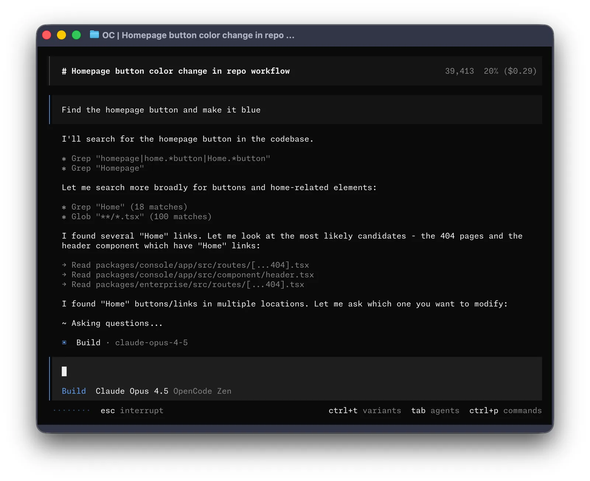

Why it fits
The agent is free and open source and runs on your own machine. Whether your use is entirely free and self-run depends on the model: local models keep everything on your hardware, free hosted models cost nothing but send code to a provider, and paid providers are optional.


Getting started
Prerequisites (from the official docs):
- A modern terminal on macOS, Linux or Windows (a desktop app is also offered)
- An AI model. OpenCode itself is free, but it does nothing without one. Options: (a) some hosted models offered free by OpenCode for a limited time (terms and the list can change); (b) a local model server such as Ollama, LM Studio or vLLM, which needs strong hardware (plenty of RAM or GPU memory) to be practical; (c) optional paid providers or OpenCode subscriptions
- A project directory with your code
Steps:
- Install OpenCode with the official install script, Homebrew or npm, as shown in the docs.
- Start opencode in your project directory.
- Connect a provider with /connect, or configure a local model server such as Ollama.
- Pick a model with /models and start working in the terminal UI.
Official docs (current version): https://opencode.ai/v2/docs/
Models and local providers: https://opencode.ai/v2/docs/models/
Notes
Model dependence: per the official docs, OpenCode works with many hosted providers and discovers local models from Ollama, LM Studio and vLLM automatically. In practice, local models work but need strong hardware (enough RAM or GPU memory for the model) to be pleasant to use. OpenCode's own model service lists several models as free "for a limited time" (for example Big Pickle, GLM-5.3-Flash Free and DeepSeek V4.1 Flash Free at the time of checking); availability, regions and data handling differ per model (some providers use the free period to collect feedback, others state zero retention; some, such as Crouton Alpha Free and Pulse Alpha Free, are not available in the European Union), and the list can change at any time. Free models can be hidden with OPENCODE_DISABLE_FREE_MODELS=1. OpenCode Console (pay-as-you-go) and OpenCode Go (subscription) are optional. The current docs describe OpenCode 2 (opencode.ai/v2/docs); OpenCode 1 docs remain at opencode.ai/docs. Not tested with a model provider here.